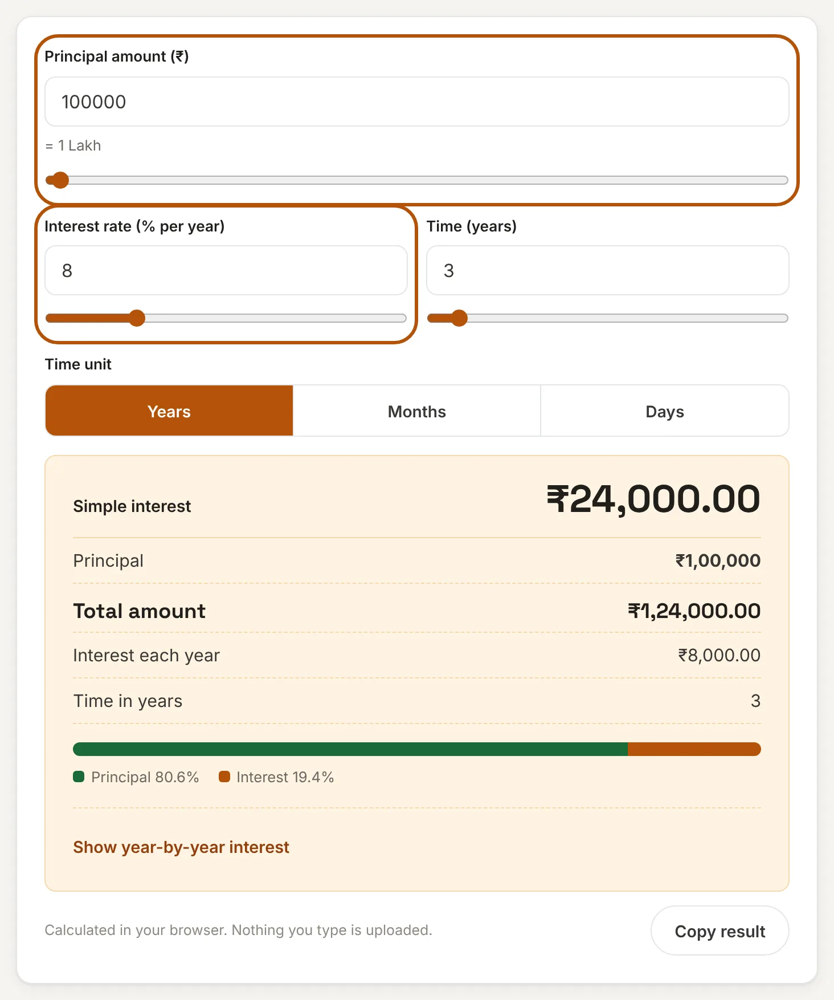
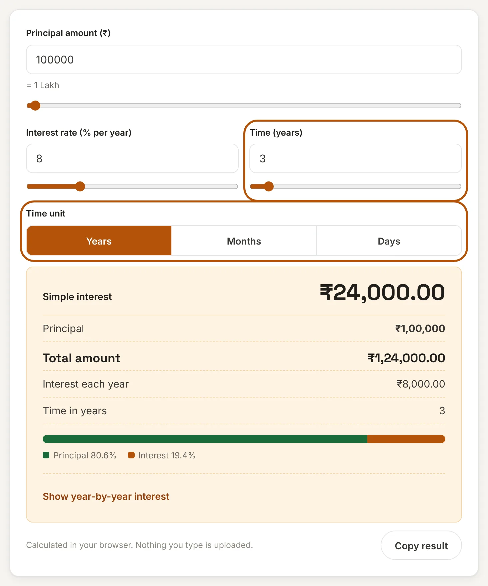
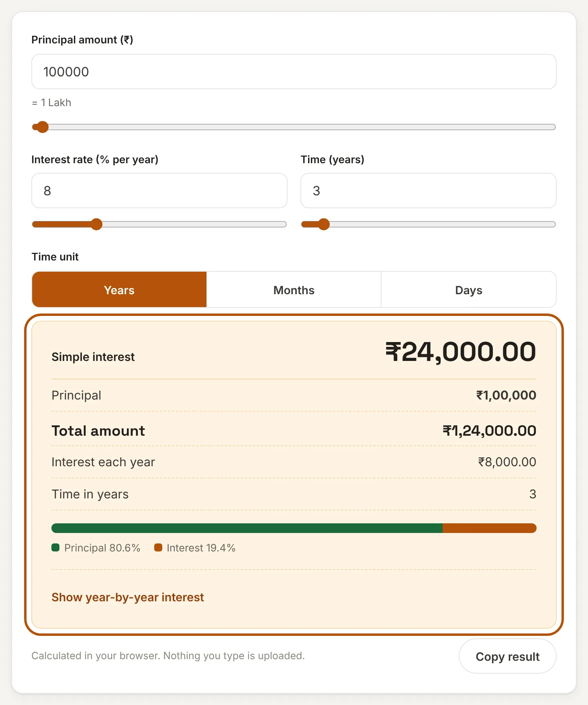
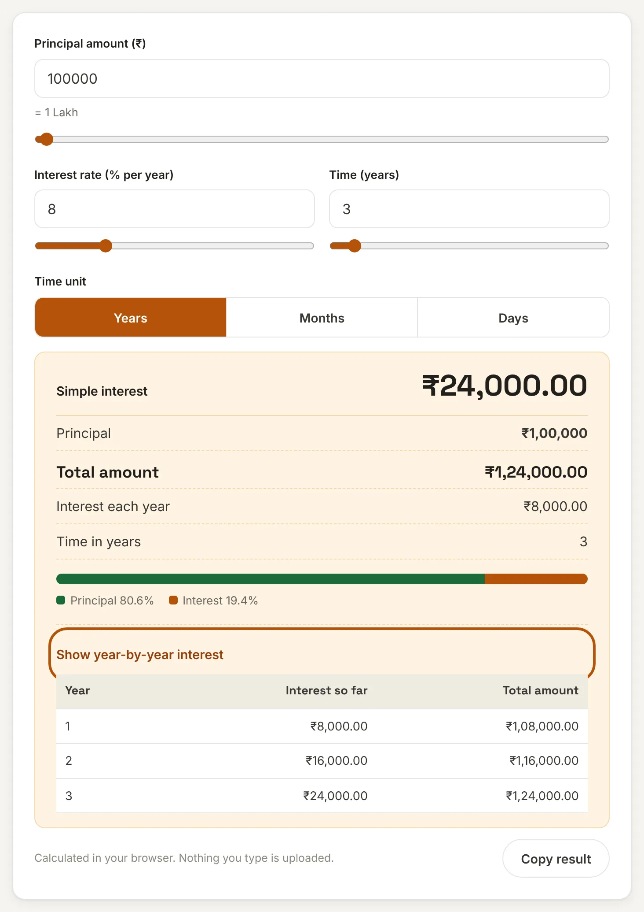

What is simple interest?
Simple interest is interest worked out only on the original amount you lend, borrow or deposit, called the principal. The interest earned each year stays the same, because it is never added back to the principal to earn more interest.
This simple interest calculator gives you the interest and the total amount in a second. Enter the principal, the yearly rate and the time, and choose whether the time is in years, months or days. It also shows the interest for each year and a year-by-year table.
How to use this simple interest calculator
Step 1: Enter the principal and the rate
Type the amount and the yearly interest rate, or drag the sliders. The words below the amount, such as "1 Lakh", help you spot a missing or extra zero.

Step 2: Enter the time and choose its unit
Type the time and pick Years, Months or Days. The calculator converts the time to years for you. It uses 12 months in a year and 365 days in a year, so 18 months is 1.5 years and 100 days is about 0.274 years. Fractions such as 2.5 years work too.

Step 3: Read the interest and total
The result shows the simple interest, the total amount you get or owe, the interest for each year and the time in years. The bar shows how much of the total is principal and how much is interest.

Step 4: Check the year-by-year table
Open Show year-by-year interest to see the interest and total at the end of each year. A part year, such as the last six months of 2.5 years, is marked "(part)". Use Copy result to save a one-line summary.

Simple interest formula
Here P is the principal, R the interest rate per year in percent and T the time in years. The total amount is the principal plus the interest. If the time is given in months, divide it by 12. If it is in days, divide it by 365.
Finding the rate, the time or the principal
You can turn the formula around when the interest is known and something else is missing:
- Rate: R = Interest × 100 ÷ (P × T). Example: ₹12,000 interest on ₹50,000 in 3 years gives 12,000 × 100 ÷ (50,000 × 3) = 8% a year.
- Time: T = Interest × 100 ÷ (P × R). Example: ₹18,750 interest on ₹1,00,000 at 7.5% takes 2.5 years.
- Principal: P = Interest × 100 ÷ (R × T). Example: ₹4,500 interest at 12% in 1.5 years means a principal of ₹25,000.
You can check each answer by putting the three numbers back into the calculator.
Worked examples
| Principal | Rate | Time | Interest | Total |
|---|---|---|---|---|
| ₹50,000 | 8% | 3 years | ₹12,000 | ₹62,000 |
| ₹1,00,000 | 7.5% | 2.5 years | ₹18,750 | ₹1,18,750 |
| ₹25,000 | 12% | 18 months | ₹4,500 | ₹29,500 |
| ₹80,000 | 9% | 100 days | ₹1,972.60 | ₹81,972.60 |
| ₹10,00,000 | 6.5% | 5 years | ₹3,25,000 | ₹13,25,000 |
Simple interest vs compound interest
On ₹1,00,000 at 8% for 3 years, simple interest is ₹24,000. With interest compounded yearly the same money earns ₹25,971, because each year's interest is added to the principal. The gap is small over three years and grows quickly over longer periods. To compare for your own figures, use the Compound Interest Calculator.
Flat-rate loans: why the quoted rate can mislead
Some loans quote a "flat" rate, which means simple interest on the full amount for the whole loan, even though you repay part of the principal every month. Take ₹1,00,000 at a flat 8% for 3 years. The interest is ₹24,000, the total is ₹1,24,000 and the monthly payment is about ₹3,444. Because you owe less each month, the real yearly rate on the reducing balance is about 14.5%, not 8%. Before you take such a loan, compare it with the EMI Calculator, which uses the reducing-balance method.
Frequently asked questions
What is the formula for simple interest?
Simple interest = P × R × T ÷ 100, where P is the principal, R is the yearly rate in percent and T is the time in years.
How do I calculate simple interest for months or days?
Convert the time to years first: divide months by 12 or days by 365. For example, 6 months at 5% on ₹10,000 gives 10,000 × 5 × 0.5 ÷ 100 = ₹250. The calculator does this when you pick the unit.
What is the difference between simple and compound interest?
Simple interest is calculated only on the principal. Compound interest is calculated on the principal plus the interest already earned, so it grows faster over time.
How do I find the interest rate from the interest?
Use R = Interest × 100 ÷ (P × T). If you earned ₹12,000 on ₹50,000 over 3 years, the rate is 12,000 × 100 ÷ (50,000 × 3) = 8% a year.
Does this calculator use 365 days in a year?
Yes. When you choose days, it divides by 365. Some lenders use 360 days, so their figure can differ slightly. Check the method in your loan or deposit terms.
Is my data sent to a server?
No. This tool runs entirely in your browser. What you enter is never uploaded or stored.
Disclaimer: This tool gives estimates for convenience and is not financial, tax or legal advice. Lenders may round amounts or use a different day count. See our disclaimer.